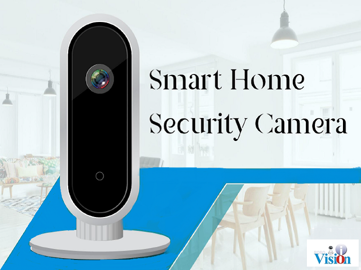
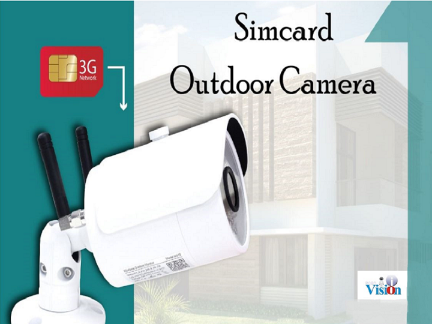
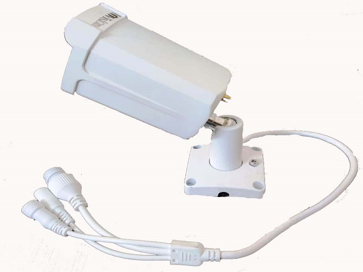
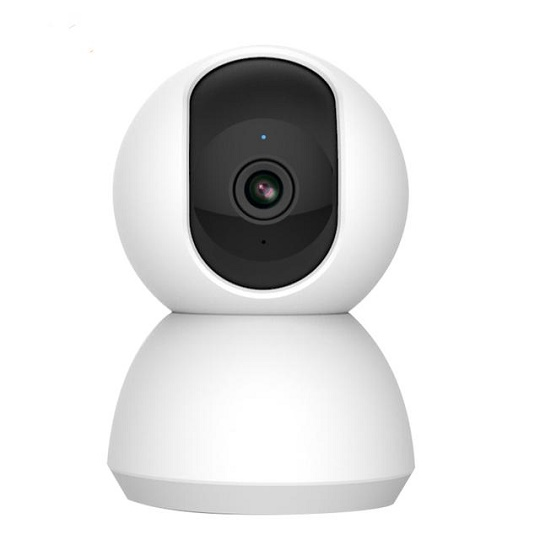
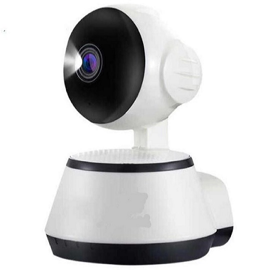
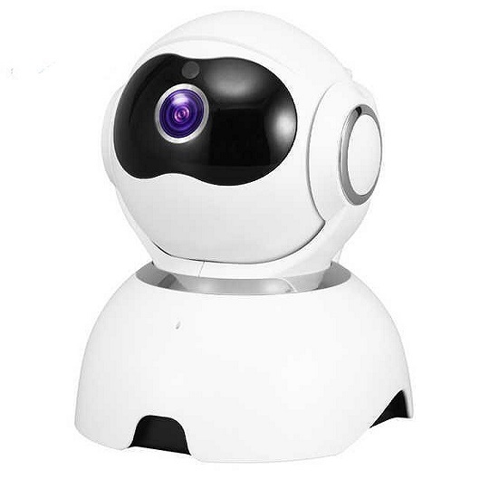

DIY(Do it Yourself): Now Dont worry about Hiring an agency to install the camera, You can be your own engineer, by installing the camera by your own in less than 5 minutes Free Cloud Storage: Uploading Video to cloud without TF Card support. Keeps 30 days of motion and sound triggered recordings for free. Keep recordings safe on FTP server even if camera is stolen / broken. Clear Two-Way Audio: When surveillance videos cant satisfy your needs, we provide you real-time two-way audio.Built-in microphone and speaker,with voice output interface,just press the button on your smart phone .Communicate Easily with you families anytime from anywhere Motion Detection: The camera will trigger push notification to the any motion detected Night Vision: Get crystal clear Image of the person in the night, 1080p Resolution

IR Distance(m): 15-20M Power Supply: Normal Supported Mobile Systems: iOS Android Video Compression Format: H.264 Supported Operating Systems: Windows Vista Windows 10 Windows 7 Windows 8 Windows XP Technology: Infrared Minimum Illumination(Lux): 0.01Lux Viewing Angle (Degree): 70 High Definition: 720P(HD) Network Interface: 4G Lens (mm): 4mm Dimensions (L x W x D)(mm): 190x55x55 Sensor Type: IP Camera Model Number: ASZA-4G-A3 Special Features: Waterproof / Weatherproof Connectivity: 4G Color: White Chip: Hi3518E 720P 960P Hi3516C Real 1080P USIM/SIM: Micro SIM card Item Category type: Security New and imported

Easy Setup and Remote View at Anywhere: One-Key WiFi configuration makes setup easy using mobile devices to quickly set up on WiFi within 5 minutes. And you can see live video with your iPhone, Android mobiles or tablets remotely when you are away from home. HD 720P Resolution: The Camera HD resolution 720P high quality can help you view the targets clearly. Night Vision: Built-in IR LEDs with ICR offer good night vision of viewing and recording in complete darkness upto 35 feet. Waterproof: This Camera is IP66 completely waterproof. Dont worry about dust & water it will have no impact on Camera. Storage: This model has inbuilt SD card slot & supports up to 128GB Micro SD card. You can watch SD card recorded videos using playback option of app or in PC & can even download videos in PC without removing SD card from camera from anywhere in world.

Auto Tracking Cloud Storage 2 MP 360 Degree

Wifi camera supports remote viewing on mobile devices.720P High Definition IP Camera, 1280x720 resolution. Day and Night Vision with built-in infrared LED, more than 10M IR distance, 24 hours monitoring, smart IR-cut Two-way Audio: Communicate with family and friends on mobile devices. Talk to camera or listen to camera Smart phone remote view. The live video can be remote viwed via iPhone/iPad/Android/Tablet/Computer at the same time. When motion is detected, the camera will send out alarm sounds and then transmit the alert message to your phone Built-in Wifi: Connect camera directely within 10m when no WiFI. Mini and portable, watch real-time video from anywhere, anytime PAN/Tilt Control - Remotely control camera PAN, tilt to view any angle you want with no blind area

Wifi camera supports remote viewing on mobile devices.720P High Definition IP Camera, 1280x720 resolution. Day and Night Vision with built-in infrared LED, more than 10M IR distance, 24 hours monitoring, smart IR-cut Two-way Audio: Communicate with family and friends on mobile devices. Talk to camera or listen to camera Smart phone remote view. The live video can be remote viwed via iPhone/iPad/Android/Tablet/Computer at the same time. When motion is detected, the camera will send out alarm sounds and then transmit the alert message to your phone Built-in Wifi: Connect camera directely within 10m when no WiFI. Mini and portable, watch real-time video from anywhere, anytime PAN/Tilt Control - Remotely control camera PAN, tilt to view any angle you want with no blind area